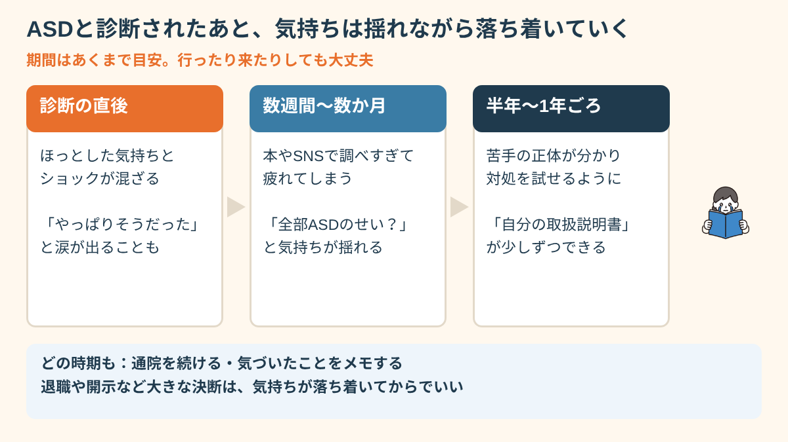
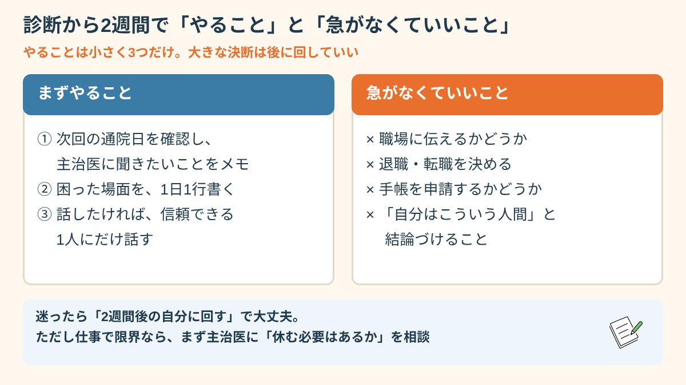
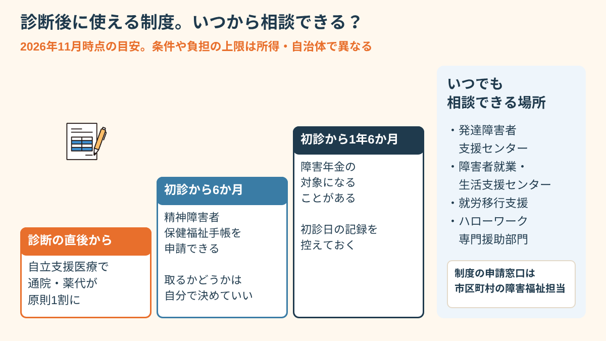
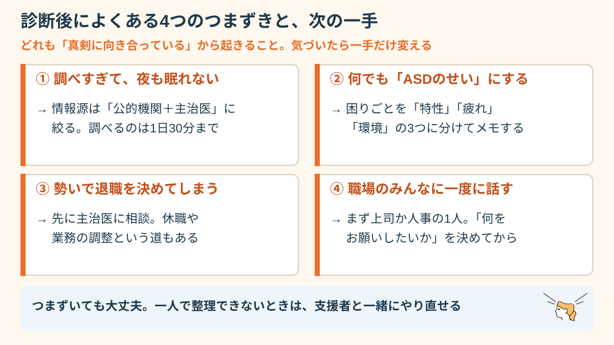
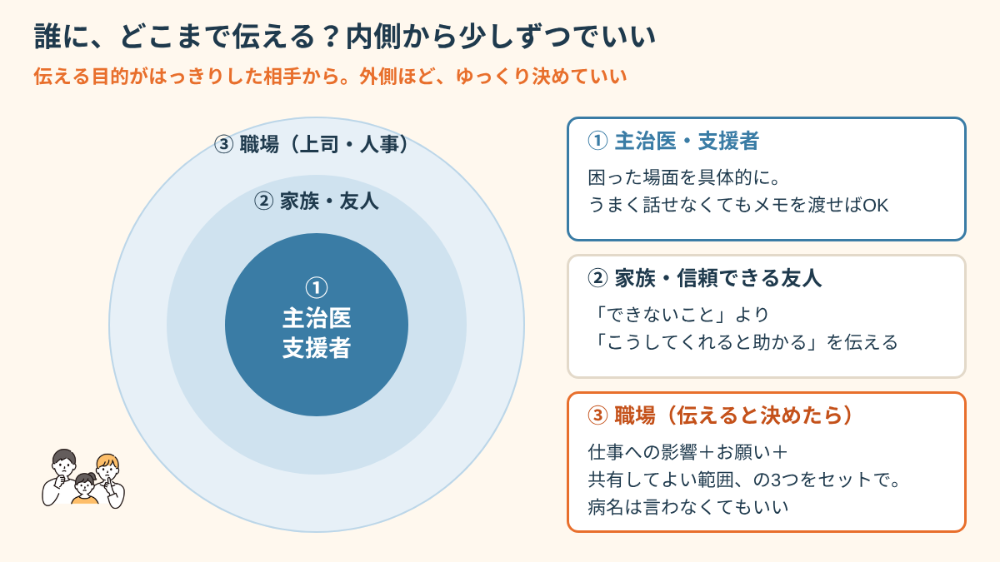

最初にお伝えしたいのは、診断の直後に急いで決めなければいけないことは、ほとんどないということです。この記事では、診断直後の気持ちの揺れ方、最初の2週間でやること・急がなくていいこと、使える制度と相談できる時期の目安、よくあるつまずき、家族や職場への伝え方までを、順番に整理しました（2026年11月時点の情報です）。
診断直後の「ほっとした」と「ショック」。混ざるのは自然なこと
ASDの診断を受けた直後には、いくつもの気持ちが同時にやってきます。「やっぱりそうだったのか」という安心、「自分は障害者なのか」という驚き、「これまでの苦労は何だったのか」というやるせなさ、そして「これからどうすればいいのか」という混乱。相反する気持ちが同じ日のうちに入れ替わることもあり、多くの方が「自分の気持ちがよく分からない」と話します。
特に大人になってから診断を受けた方は、それまでに「何度注意されても同じミスをする」「雑談の輪に入れない」「急な予定変更でパニックになる」といった経験を、長い時間かけて「自分の努力不足」だと受け止めてきたことが多いものです。診断名がついたことで、その経験に別の説明が与えられる。だからこそ、安心と同時に、過去を振り返ってつらくなることがあります。涙が止まらなくなったり、逆に何も感じなくなったりするのも、珍しいことではありません。
気持ちの落ち着き方には個人差がありますが、相談の場でよく聞く流れを目安として図にしました。診断直後は気持ちが混ざり、数週間から数か月は「調べすぎて疲れる」「全部ASDのせいに思える」と揺れやすく、半年から1年ほどたつと「自分の苦手には、こういう対処が効く」と少しずつ扱い方が見えてくる、という流れです。もちろん、まっすぐ進むとは限らず、行ったり来たりしても大丈夫です。

「診断名を聞いたとき、正直泣きました。『やっぱりそうだった』という気持ちと、『これで人生が変わってしまう』という怖さが混ざっていて。半年くらいは何をどう受け止めればいいか分からず、しんどい時期でした。でも1年たった今は、苦手な電話は先にメモを用意する、会議の後は議事録をもらう、と自分のやり方が決まってきて、当時よりずっと楽に働けている実感があります。」
最初の2週間でやること・急がなくていいこと
診断のあとは「何か手を打たなければ」と焦りやすいのですが、すぐに動かなければならないことは、実はほとんどありません。最初の2週間は、次の小さな3つだけで十分です。
- 次回の通院日を確認し、主治医に聞きたいことをメモする：「仕事で困っていることは特性と関係がありますか」「使える制度はありますか」など、診察の場では頭が真っ白になりやすいので、紙かスマホに書いて持っていきます。
- 困った場面を1日1行だけ書く：「朝礼の口頭連絡が覚えられなかった」「隣の席の電話の声で集中が切れた」など。1か月たまると、自分の困りごとのパターンが見えてきて、後で職場や支援者に説明するときの材料になります。
- 話したければ、信頼できる1人にだけ話す：家族でも友人でも構いません。話さない選択もありです。
反対に、急がなくていいのは「職場に伝えるかどうか」「退職・転職」「障害者手帳を申請するかどうか」の3つです。どれも人生への影響が大きい決断で、気持ちが揺れている時期に決めると、後から「あのときは勢いだった」と感じやすくなります。「自分はこういう人間だ」と結論づけることも、急がなくて大丈夫です。
ただし例外があります。眠れない日が続く、出勤前に動悸がする、仕事でミスが重なって限界に近い、という場合は、2週間待たずに主治医に「休む必要はありますか」と相談してください。休職や業務の調整は、退職より先に検討できる選択肢です。

診断後に使える制度と、相談できる時期の目安（2026年11月時点）
「診断されたら、何か使える制度があるのでは」と気になる方も多いはずです。ここでは、ASDの診断後に使える可能性がある主な制度を、相談できる時期の目安の順に整理します。どれも「使わなければいけない」ものではなく、必要になったときに思い出せればよい、くらいの位置づけで読んでください。対象になるかどうかや負担の上限は、所得や自治体、本人の状態によって異なります。
診断の直後から：自立支援医療（精神通院医療）
精神科や心療内科への通院が続く場合、自立支援医療（精神通院医療）の対象になることがあります。認められると、通院や薬代の自己負担が原則1割になり、所得に応じて1か月あたりの上限額も設けられます。ASDなどの発達障害も対象に含まれます。申請窓口は市区町村の障害福祉担当で、主治医の診断書が必要です。有効期間は1年で、継続するには更新の手続きをします。通院が長くなりそうなら、早めに主治医に「対象になりますか」と聞いてみるとよいでしょう。
初診日から6か月たったら：精神障害者保健福祉手帳
ASDの方が取得を検討するのは、多くの場合、精神障害者保健福祉手帳です。申請できるのは、その病気で初めて医師の診察を受けた日（初診日）から6か月以上たってからが原則です。手帳があると、障害者雇用枠の求人に応募できる、税金の控除や公共料金の割引が受けられる場合がある、といった利点があります。一方で、取るかどうか、取った後に使うかどうかは本人が決めてよく、職場に知らせる義務もありません。迷っている方は障害者手帳を取るべきか迷っている方向けの記事も参考にしてください。
初診日から1年6か月たったら：障害年金
生活や仕事に大きな支障が続いている場合、障害年金の対象になることがあります。原則として、初診日から1年6か月たった日が「障害認定日」となり、その時点の状態で判断されます。ここで大事になるのが初診日の記録です。大人になってから診断された方は、以前に別の病院でうつや不眠の治療を受けていた場合、そちらが初診日とされることもあります。受診した病院名と時期を、今のうちにメモしておくと後で助かります。くわしくは障害年金の基本の記事で整理しています。
いつでも相談できる場所
制度とは別に、診断の直後からいつでも相談できる場所もあります。発達障害者支援センター（都道府県・政令指定都市に設置）は、本人や家族からの生活・仕事の相談を受けています。働くことの相談なら、障害者就業・生活支援センター、ハローワークの専門援助部門、就労移行支援事業所（原則2年まで利用でき、手帳がなくても主治医の意見などで利用できる場合があります）も選択肢です。就労移行支援については就労移行支援の仕組みの記事にまとめています。

「診断名は道具」。自分の取扱説明書をつくる
ASDという診断名は、「あなたがどんな人間か」を決めるラベルではありません。「どんな環境なら力を出しやすいか」「どんな手助けがあれば困りごとが減るか」を考えるための、生きやすくなるための道具として使うことができます。
道具として使うための具体的な方法が、自分の取扱説明書をつくることです。難しく考える必要はなく、紙を3列に分けて「苦手な場面」「自分でできる工夫」「周りに頼みたいこと」を書いていくだけです。たとえば次のような形です。
- 口頭の指示が覚えにくい → 工夫：その場でメモを取る、復唱する → 頼みたいこと：大事な指示はチャットでも送ってほしい
- 周りの話し声で集中が切れる → 工夫：ノイズキャンセリングのイヤホンを使う → 頼みたいこと：集中作業の時間は席を移らせてほしい
- 急な予定変更で混乱する → 工夫：1日の予定を朝に書き出す → 頼みたいこと：変更は分かった時点で早めに教えてほしい
最初の2週間で書きためた「困った場面のメモ」が、ここで役に立ちます。最初は苦手の列しか埋まらなくても構いません。主治医や支援者と一緒に工夫の列を埋めていくうちに、少しずつ「自分の扱い方」が分かってきます。この取扱説明書は、後で職場に配慮をお願いするときの下書きにもなります。配慮の頼み方は合理的配慮の頼み方の記事でくわしく紹介しています。
また、得意なことも1行でいいので書き足してみてください。「決まった手順を正確に繰り返せる」「細かい間違いに気づける」「興味のある分野はとことん調べられる」など、ASDの特性が仕事で強みになる場面もあります。苦手だけを並べると気持ちが沈みやすいので、両方を見るのがコツです。
診断後によくある4つのつまずきと、次の一手
診断のあと、真剣に向き合おうとする人ほど陥りやすいつまずきがあります。相談の場でよく出会う4つと、それぞれの「次の一手」をまとめました。どれも失敗ではなく、立て直せるものです。
1. 調べすぎて、夜も眠れなくなる
診断後、本やSNS、動画で情報を集め続け、気づけば深夜2時、という方は少なくありません。大人のASDの情報は量が多く、体験談の中には極端なものもあるため、読むほど不安が大きくなることがあります。次の一手は、情報源を「公的機関の情報」と「主治医」の2つに絞ること、そして調べる時間を「1日30分まで」と決めることです。気になったことはメモしておき、次の診察でまとめて聞けば十分です。
2. 何でも「ASDのせい」にしてしまう
診断名がつくと、遅刻も、人間関係のもめごとも、疲れやすさも、すべてASDのせいに見えてくることがあります。逆に「本当は診断が間違っているのでは」と否定したくなる時期もあります。次の一手は、困りごとを「特性」「疲れ」「環境」の3つに分けてメモすることです。たとえば「会議で話についていけない」は、特性（聞き取りの苦手さ）なのか、疲れ（睡眠不足）なのか、環境（資料がない）なのか。分けてみると、対処できるものが見えてきます。
3. 勢いで退職を決めてしまう
「この職場が合わない理由が分かった。もう辞めよう」と、診断から数週間で退職届を出してしまうケースもあります。もちろん合わない職場から離れるのが正解の場合もありますが、気持ちが揺れている時期の決断は、後悔につながりやすいものです。次の一手は、退職の前に主治医に相談すること。休職して体調を整える、業務内容や席の配置の調整を相談する、といった道もあります。辞めるとしても、次の働き方を考えてからのほうが、経済的にも気持ちのうえでも余裕が持てます。
4. 職場のみんなに一度に話してしまう
「隠し事をしたくない」と、朝礼やチャットで一斉に伝えてしまい、後から「ここまで話さなければよかった」と悩む方もいます。一度伝えたことは取り消せません。次の一手は、まず直属の上司か人事のどちらか1人に、「何をお願いしたいか」を決めてから話すことです。伝える範囲は、相手の反応を見ながら少しずつ広げられます。

「診断の翌月に、勢いで上司に退職を伝えてしまいました。でも主治医に相談したら『まず1か月休んでみては』と言われて、休職に切り替えてもらえた。休んでいる間に自分の取扱説明書をつくって、復職のときに上司と配慮の話ができました。あのまま辞めていたら、たぶん次の職場でも同じことを繰り返していたと思います。」
家族・職場にどう伝える？伝える順番と言い方
診断のことを誰に、どこまで伝えるかに、決まった正解はありません。ただ、相談の場で後悔が少ないのは、内側から少しずつ広げていくやり方です。最初は主治医や支援者、次に家族や信頼できる友人、そして必要になったら職場、という順番です。外側にいくほど、ゆっくり決めて構いません。
家族に伝えるとき
家族に伝えるときは、「できないこと」を並べるより、「こうしてくれると助かる」を一緒に伝えると、相手も動きやすくなります。たとえば「予定が変わるときは前日までに教えてほしい」「疲れているときは話しかけるのを少し待ってほしい」などです。
家族の側も、戸惑うのは自然なことです。「育て方のせいでは」と自分を責める親御さんや、「今までわがままだと思っていた」と受け止めきれないパートナーもいます。家族が先に「どう接したらいいか」を相談したい場合は、発達障害者支援センターで家族からの相談も受け付けています。本人と家族が別々に相談先を持っておくと、お互いに抱え込みすぎずに済みます。

職場に伝えると決めたとき
職場に伝えるかどうかは、急がなくて大丈夫です。伝えると決めたときは、病名から入るよりも、「仕事への影響」「お願いしたいこと」「共有してよい範囲」の3つをセットで伝えるのがコツです。病名や診断の詳しい内容は、話したくなければ言わなくても構いません。雇用の場面では、障害者雇用促進法により、事業主には障害のある人への合理的配慮の提供が求められています。
これから就職や転職をする場合は、障害者雇用枠で働く（オープン）か、伝えずに一般枠で働く（クローズ）か、一部の人にだけ伝えるか、という選択も出てきます。それぞれの違いはオープン就労とクローズ就労の違いと選び方の記事で数字も交えて整理しています。